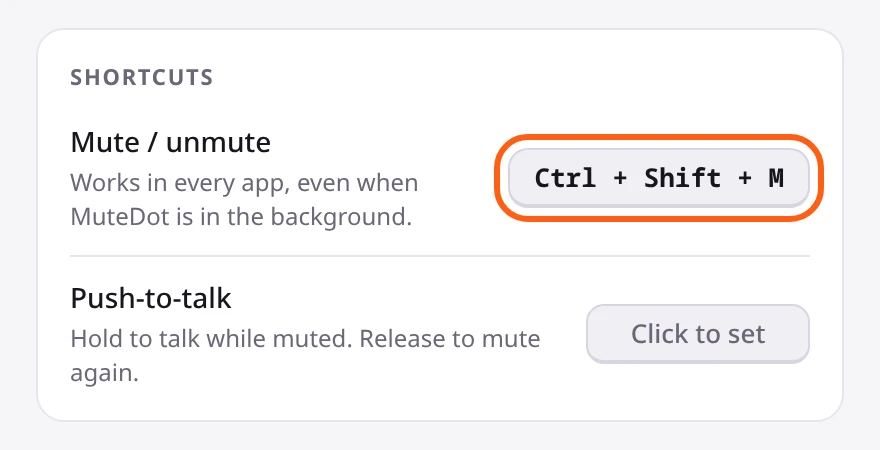
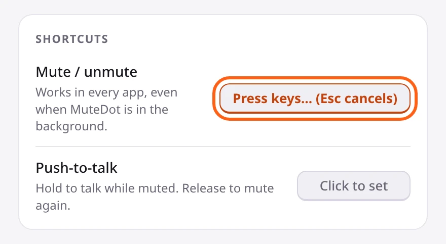
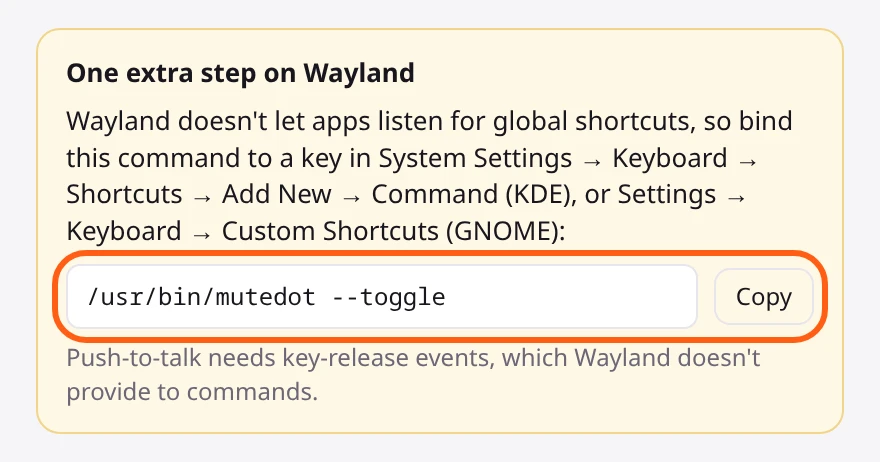
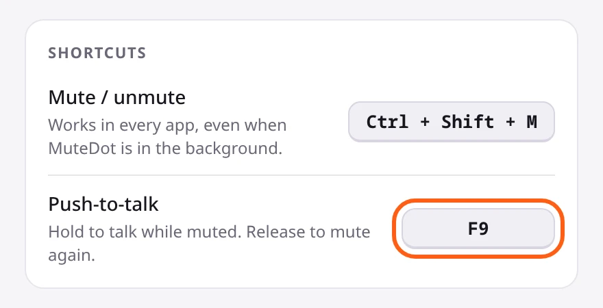
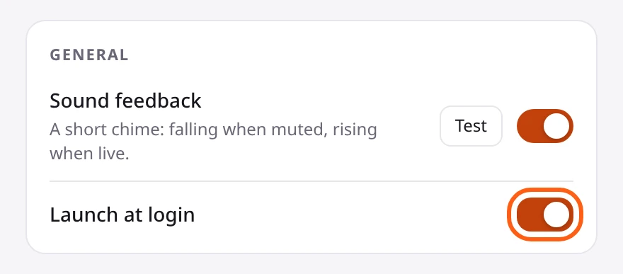

Mute your microphone with a keyboard shortcut on Linux
For PulseAudio and PipeWire, on X11 and Wayland · Updated November 2026
Most Linux desktops don't give you one key that mutes every microphone. This guide shows how to set that up with MuteDot on X11 or Wayland, in KDE Plasma or GNOME, and how to do a simpler version with a single command.
Install MuteDot. On X11, press Ctrl + Shift + M. On Wayland, add a keyboard shortcut in your desktop's settings that runs the command MuteDot shows you. Either way, every microphone is muted and a small red MUTED sign stays on screen.
- Install
- X11 or Wayland?
- Set up on X11
- Set up on Wayland
- Push-to-talk
- Start at login
- Without MuteDot
- If something's wrong
Install MuteDot
After you buy, Gumroad emails you a download link. Download the file for your system, open a terminal in the folder you saved it to (usually cd ~/Downloads), and run the install command:
| Your system | Download | Install with |
|---|---|---|
| Ubuntu, Debian, Linux Mint, Pop!_OS | .deb | sudo apt install ./MuteDot_*.deb |
| Fedora | .rpm | sudo dnf install ./MuteDot-*.rpm |
| Anything else, like Arch | .AppImage | chmod +x MuteDot_*.AppImage, then run it |
Then open MuteDot from your app menu. It works with PulseAudio and PipeWire, so almost any current desktop is fine.
X11 or Wayland?
The setup is slightly different on each. To check which one you're using, run:
echo $XDG_SESSION_TYPEIt prints x11 or wayland. Recent versions of Ubuntu, Fedora and KDE Plasma use Wayland by default.
Set up on X11
-
Find the sign at the top of your screen
MuteDot puts a small sign at the top middle of your screen, just under where a webcam usually sits. Green with LIVE means people can hear you.
-
Press Ctrl + Shift + M to mute
The sign turns red and says MUTED, and you hear a short falling chime. Every microphone is now off, in every app.
-
Press it again to unmute
The sign turns green again and the chime rises.
Change the shortcut
-
Right-click the sign to open Settings
Under Shortcuts, click the box that says Ctrl + Shift + M.

-
Press the keys you want
The box says "Press keys…" while it waits. Press your new combination and it saves straight away. Press Esc to cancel.

Letters, numbers and Space need Ctrl, Alt or Shift with them, so you can't mute yourself by accident while typing. Keys like F9 or Pause work on their own.
Set up on Wayland
Wayland doesn't let apps listen for keyboard shortcuts in the background. So instead, you add the shortcut in your desktop's own settings, and it runs MuteDot for you.
-
Copy MuteDot's command
Right-click the sign to open Settings. MuteDot notices you're on Wayland and shows a yellow box at the top. Click Copy.

-
Add a shortcut that runs it
KDE Plasma: open System Settings → Keyboard → Shortcuts. Click Add New, choose the command option, and paste the command. Then set the key, for example Ctrl + Shift + M.
GNOME: open Settings → Keyboard → View and Customize Shortcuts → Custom Shortcuts, and click Add Shortcut. Give it a name like "Mute mic", paste the command, and set the key.
-
Press your new shortcut
The sign turns red and says MUTED. Press it again to unmute.
Push-to-talk isn't available on Wayland. Desktop shortcuts can run a command when you press a key, but not when you let go of it.
Use push-to-talk (X11)
Push-to-talk keeps you muted and lets you talk only while you hold a key, like a walkie-talkie.
-
Pick a key
In Settings, click Click to set next to Push-to-talk, then press the key you want to hold. F9 is a good choice because you don't use it for typing.

-
Mute, then hold the key to talk
The sign says TALKING while you hold it, and you're muted again as soon as you let go.
To turn push-to-talk off, click its box and press Backspace.
Start MuteDot at login
In Settings, under General, turn on Launch at login, so MuteDot is running before your first call.

Scripts and status bars
mutedot --toggle # mute or unmute
mutedot --mute # mute every mic
mutedot --unmute # unmute every mic
mutedot --status # prints "muted" or "live"--status exits with 0 when muted and 1 when live, so you can use it in a Waybar or Polybar module. If MuteDot is already running, these commands go to it, so you still get the chime and the sign updates.
Without MuteDot
You can mute your default microphone with one command, and bind it to a key the same way as in the Wayland steps above.
On PulseAudio, or PipeWire with pipewire-pulse:
pactl set-source-mute @DEFAULT_SOURCE@ toggleOn PipeWire with WirePlumber:
wpctl set-mute @DEFAULT_AUDIO_SOURCE@ toggleThe catch with these:
- They only mute the default mic. If a call app is using a different one, like the mic in your webcam, it still hears you.
- Nothing on screen tells you whether you're muted.
If something's not working
Settings says the shortcut is unavailable (X11)
Another app is already using that key combination. Pick a different one, as shown in Set up on X11.
My Wayland shortcut does nothing
Paste the command into a terminal and run it. If the sign changes, the command is fine and the problem is the shortcut in your desktop's settings. Check it was saved with the whole command.
I can't see the sign
Open Settings and check that Show indicator is on. If Only show when live is on, the sign hides while you're muted, which is expected. If it's somewhere off screen, click Reset position.
You can open Settings from the MuteDot icon in your panel. GNOME only shows panel icons with the AppIndicator extension, which Ubuntu includes. Without it, run mutedot --settings.
My call app says I'm unmuted
Your call app's mute button doesn't know about MuteDot, so it can say you're unmuted while MuteDot has the microphone muted. Nothing gets through. Go by the MuteDot sign.
Linux and Windows 10/11. 30-day money-back guarantee.